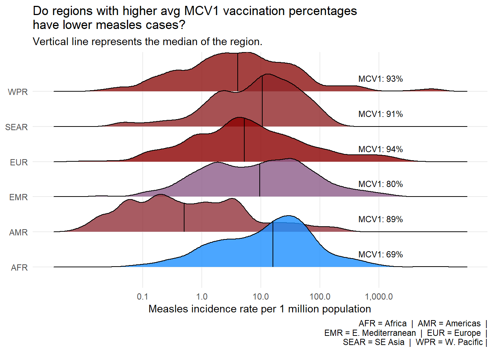

library(gt)
library(tidyverse)
library(ggplot2)
library(forcats)
library(scales)
library(ggridges)
complete_data <- read.csv("complete_data.csv")
cases_month <- readr::read_csv('https://raw.githubusercontent.com/rfordatascience/tidytuesday/main/data/2025/2025-06-24/cases_month.csv')
cases_year <- readr::read_csv('https://raw.githubusercontent.com/rfordatascience/tidytuesday/main/data/2025/2025-06-24/cases_year.csv')FinalCheckpointResearchQuestionProject1
Research Question
How does vaccination percentages affect measles incidince rates by region?
#in order to not overcount rows and have errors with NA's:
country_year <- complete_data |>
distinct(region, country, year, .keep_all = TRUE) |>
filter(!is.na(COVERAGE_MCV1),
!is.na(yearly_measles_incidence_rate_per_1000000_total_population))Table 1
We are interested in seeing the differences in vaccination percentages and incidence rates by region.
Regional_Vaccination <- function(r) {
country_year |>
filter(region == r) |>
summarise(
region = r,
n_countries = n_distinct(country),
year_range = paste(min(year), max(year),
sep = "–"),
avg_mcv1_coverage = round(mean(COVERAGE_MCV1, na.rm = TRUE), 1),
avg_incidence_per_1M = round(
mean(yearly_measles_incidence_rate_per_1000000_total_population,
na.rm = TRUE), 1))
}
Regional_Summaries <- country_year |>
distinct(region) |>
pull(region) |>
map_dfr(Regional_Vaccination) |>
arrange(desc(avg_incidence_per_1M)) |>
rename(
"Region" = region,
"Countries" = n_countries,
"Year Range" = year_range,
"Avg MCV1 Coverage %" = avg_mcv1_coverage,
"Avg Incidence per 1M" = avg_incidence_per_1M
)|>
mutate(`Avg MCV1 Coverage %`= paste0(`Avg MCV1 Coverage %`, "%"),
`Avg Incidence per 1M` = formatC(`Avg Incidence per 1M`, format = "f", digits = 1)) |>
gt() |>
tab_header(
title = "Average MCV1 Vaccination Coverage and Measles Incidence Rate by WHO Region years (2012–2024)") |>
tab_spanner(
label = "Regional Statistics",
columns = c(`Avg MCV1 Coverage %`, `Avg Incidence per 1M`)) |> tab_options(
column_labels.font.weight = "bold",
heading.background.color = "#2C7BB6",
column_labels.background.color = "#D9EAF7",
row.striping.background_color = "#F0F7FF",
row.striping.include_table_body = TRUE) |>
tab_style(
style = cell_text(color = "white", weight = "bold"),
locations = cells_title()) |>
tab_style(
style = cell_fill(color = "#D9EAF7"),
locations = cells_column_spanners())
Regional_Summaries| Average MCV1 Vaccination Coverage and Measles Incidence Rate by WHO Region years (2012–2024) | ||||
| Region | Countries | Year Range |
Regional Statistics
|
|
|---|---|---|---|---|
| Avg MCV1 Coverage % | Avg Incidence per 1M | |||
| WPR | 27 | 2012–2024 | 92.9% | 82.2 |
| AFR | 46 | 2012–2024 | 69.3% | 59.4 |
| EUR | 53 | 2012–2024 | 94.4% | 56.2 |
| EMR | 21 | 2012–2024 | 80.3% | 54.4 |
| SEAR | 11 | 2012–2024 | 90.5% | 16.7 |
| AMR | 35 | 2014–2024 | 88.2% | 1.7 |
Table 2
Seeing how Europe had the highest MCV1 Coverage percentage we believed it would be interesting to see the statistics by country.
European_Data <- country_year |>
filter(region == "EUR")
Country_stats <- function(c) {
European_Data |>
filter(country == c) |>
summarise(
country = c,
year_range = paste(min(year), max(year),
sep = "–"),
avg_mcv1_coverage = round(mean(COVERAGE_MCV1, na.rm = TRUE), 1),
avg_incidence_per_1M = round(
mean(yearly_measles_incidence_rate_per_1000000_total_population,
na.rm = TRUE), 1))
}
European_Table_Data <- European_Data |>
distinct(country) |>
pull(country) |>
map_dfr(Country_stats) |>
arrange(desc(avg_incidence_per_1M)) |>
rename(
"Country" = country,
"Year Range" = year_range,
"Avg MCV1 Coverage %" = avg_mcv1_coverage,
"Avg Incidence per 1M" = avg_incidence_per_1M) |>
mutate(`Avg MCV1 Coverage %`= paste0(`Avg MCV1 Coverage %`, "%"),
`Avg Incidence per 1M` = formatC(`Avg Incidence per 1M`, format = "f", digits = 1)) |>
head(`Avg Incidence per 1M`, n = 10) |>
gt() |>
tab_header(
title = "Measles Incidence and MCV1 Coverage by Country Within Europe's Top 10 Highest Incidence Rate Countries",
subtitle = "(The World's Highest Vaccinated Region)") |>
tab_spanner(
label = "Country Statistics",
columns = c(`Avg MCV1 Coverage %`, `Avg Incidence per 1M`)) |> tab_options(
column_labels.font.weight = "bold",
heading.background.color = "#1A7A4A",
column_labels.background.color = "#D4EDDA",
row.striping.background_color = "#F0FAF4",
row.striping.include_table_body = TRUE) |>
tab_style(
style = cell_text(color = "white", weight = "bold"),
locations = cells_title()) |>
tab_style(
style = cell_fill(color = "#D4EDDA"),
locations = cells_column_spanners())
European_Table_Data| Measles Incidence and MCV1 Coverage by Country Within Europe's Top 10 Highest Incidence Rate Countries | |||
| (The World's Highest Vaccinated Region) | |||
| Country | Year Range |
Country Statistics
|
|
|---|---|---|---|
| Avg MCV1 Coverage % | Avg Incidence per 1M | ||
| Kyrgyzstan | 2012–2024 | 94.4% | 516.7 |
| Georgia | 2012–2024 | 94.4% | 367.4 |
| Romania | 2012–2024 | 94.4% | 246.7 |
| Kazakhstan | 2012–2024 | 94.4% | 243.5 |
| Ukraine | 2012–2024 | 94.4% | 230.8 |
| Azerbaijan | 2012–2024 | 94.4% | 230.4 |
| Bosnia and Herzegovina | 2013–2024 | 94.3% | 188.4 |
| North Macedonia | 2012–2024 | 94.4% | 84.4 |
| Serbia | 2012–2024 | 94.4% | 78.8 |
| San Marino | 2017–2024 | 94.6% | 75.4 |
Visualization #1
After looking at our table of European country statistics we believed it would be interesting to see the measles incidence rates per year in the top 5 countries.
top5_eur <- country_year |>
filter(region == "EUR") |>
group_by(country) |>
summarise(avg_incidence = mean(yearly_measles_incidence_rate_per_1000000_total_population, na.rm = TRUE)) |>
slice_max(avg_incidence, n = 5)
top5_data <- country_year |>
filter(country %in% top5_eur$country)
ggplot(top5_data, aes(x = year,
y = yearly_measles_incidence_rate_per_1000000_total_population,
color = country,
fill = country)) +
geom_line(linewidth = 1.2) +
geom_point(size = 3, shape = 21,
color = "white", stroke = 1.5) +
facet_wrap(~ country, ncol = 2) +
scale_x_continuous(
breaks = seq(2012, 2024, by = 2),
labels = seq(2012, 2024, by = 2)) +
scale_y_continuous(
breaks = seq(0, 3000, by = 500),
labels = scales::comma) +
scale_color_manual(values = c(
"Georgia" = "#E63944",
"Kazakhstan" = "#F4A265",
"Kyrgyzstan" = "#2A9E6D",
"Romania" = "#457B9D",
"Ukraine" = "purple")) +
scale_fill_manual(values = c(
"Georgia" = "#E63944",
"Kazakhstan" = "#F4A265",
"Kyrgyzstan" = "#2A9E6D",
"Romania" = "#457B9D",
"Ukraine" = "purple")) +
labs(
title = "Measles Outbreaks Over Time in Europe's 5\n Highest Incidence Countries",
subtitle = "Annual measles incidence per 1,000,000 population (2012–2024)",
x = "Year",
y = "Incidence per 1,000,000 Population",) +
theme_minimal() +
theme(
plot.title = element_text(face = "bold", size = 14),
plot.subtitle = element_text(color = "grey40",
size = 10),
plot.caption = element_text(color = "grey60",
size = 8),
strip.text = element_text(face = "bold", size = 11),
strip.background = element_rect(fill = "#F0F0F0", color = NA),
axis.text.x = element_text(angle = 45,
hjust = 1, size = 8),
axis.text.y = element_text(size = 8),
axis.title = element_text(face = "bold", size = 10),
panel.spacing = unit(1.2, "lines"),
legend.position = "none")![A faceted line chart showing annual measles incidence per 1,000,000 population from 2012 to 2024 for the five European countries with the highest average incidence rates which are Georgia, Kazakhstan, Kyrgyzstan, Romania, and Ukraine. Each country occupies its own panel, sharing the same scaling across all panels. With our visual we are able to see the major outbreak spikes at different points in time for each country, having Kyrgyzstan peaking near 3,000 in 2015, Georgia and Ukraine spiking around 2018 to 2019, and Kazakhstan and Kyrgyzstan surging again in 2023 to 2024.](FinalCheckPointProject1_files/figure-html/unnamed-chunk-5-1.png)
We saw that there is lots of variation in all of the years however the country with the largest spike was Kyrgyzstan in 2015 having nearly 3,000 cases.
Visualization #2
Now we are curious if measles vaccination rate is an influencer in the case incidence rate among the 6 WHO regions starting in 2012, at which point the MVC1 and MVC2 vaccines had already been created.
complete_data <- read.csv("complete_data.csv")
disease_ridges <- complete_data |>
filter(!is.na(COVERAGE_MCV1), year <= 2024,
yearly_measles_incidence_rate_per_1000000_total_population > 0) |>
select(region, year, country,
COVERAGE_MCV1,
yearly_measles_incidence_rate_per_1000000_total_population) |>
mutate(avg_mcv1 = mean(COVERAGE_MCV1), .by = region)
ggplot(disease_ridges,
aes(x = yearly_measles_incidence_rate_per_1000000_total_population,
y = region, fill = avg_mcv1)) +
geom_density_ridges(alpha = 0.8,scale = 1.5,
quantile_lines = TRUE, quantiles = 2) +
geom_text(
data = disease_ridges |> distinct(region, avg_mcv1),
aes(x = 1075,
y = region,
label = paste0("MCV1: ", round(avg_mcv1), "%")),
vjust = -1.5, size = 3) +
scale_x_log10(
labels = comma,
breaks = c(0.1, 1, 10, 100, 1000),
minor_breaks = NULL) +
scale_fill_gradient(
low = "dodgerblue",
high = "darkred",
name = "Avg MCV1 (%)") +
labs(
title = "Do regions with higher avg MCV1 vaccination percentages\nhave lower measles cases?",
subtitle = "Vertical line represents the median of the region.",
x = "Measles incidence rate per 1 million population",
y = NULL,
caption = "AFR = Africa | AMR = Americas |\n EMR = E. Mediterranean | EUR = Europe |\n SEAR = SE Asia | WPR = W. Pacific |") +
theme_minimal() +
theme(
panel.grid.minor = element_blank(),
legend.position = "none",
)Picking joint bandwidth of 0.171
The plots show how regions with lower vaccination rates tend to have higher incidence rates than regions with higher vaccination rates.